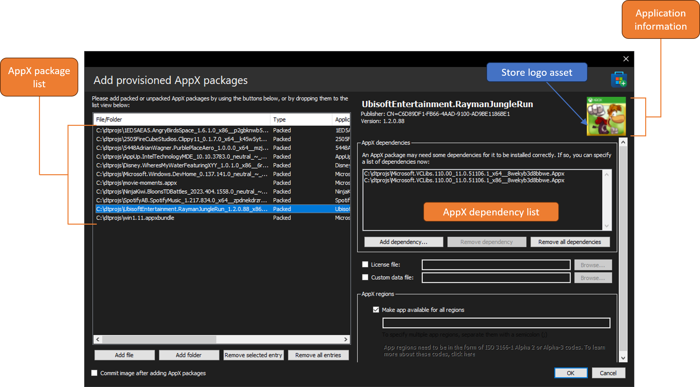
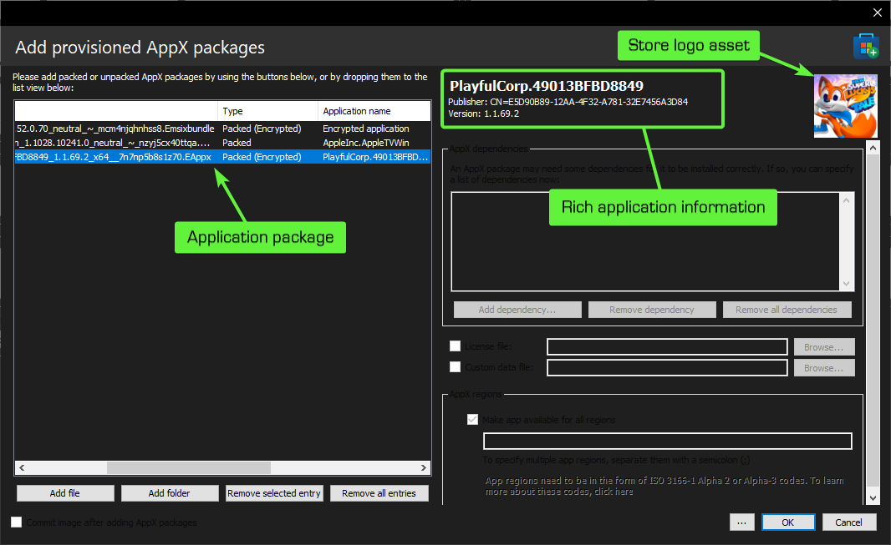
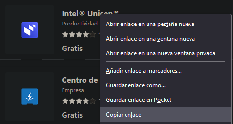
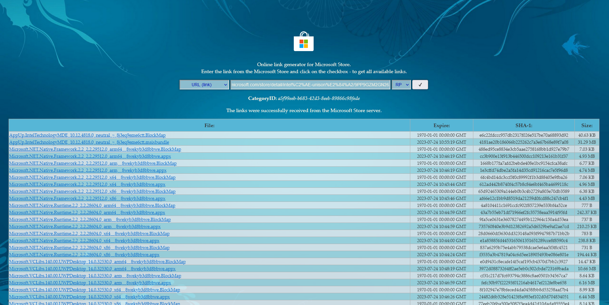

Adding provisioned AppX packages

With DISMTools you can add provisioned AppX packages using an intuitive UI. This action can be accessed by clicking Commands > App packages > Add provisioned app package...
Target OS support
This action is supported on the following platforms:
| Platform | Supported? |
|---|---|
| Windows 7/Server 2008 R2 | ❌ |
| Windows 8/Server 2012 | ✔ |
| Windows 8.1/Server 2012 R2 | ✔ |
| Windows 10/Server 2016/2019/2022 | ✔ |
| Windows 11/Server vNext | ✔ |
NOTE: if you are adding provisioned AppX packages to an online installation, you may need to enable sideloading of applications. Otherwise, you may get error code 0xc1570113. More information can be found here. You may also need to properly register the application to the operating system for it to fully work, a guide for which is explained later in this page.
This action is supported on DISMTools 0.2 and newer
Usage
- Add any application file you want to add to a Windows image, which can be in the
.appx,.msix,.appxbundleor.msixbundleformat, to the AppX package list. This can be done by using the buttons on the bottom of the dialog, or by dropping them from an elevated application. - If an application contains dependencies, be sure to add these to the AppX dependency list, by using the buttons below or by dropping them from an elevated application
App Installer support
DISMTools 0.3.2 expands the AppX addition capabilities by supporting App Installer files. Simply specify an .appinstaller file or drop it in the package addition list view, and let the program deal with it.
You can learn more about App Installer files here.
Encrypted application support
DISMTools 0.5 introduces the ability to add encrypted application packages (.eappx, .emsix, .eappxbundle, and .emsixbundle files) to active installations. Simply add those, just like you would with regular applications.
For standard encrypted applications (not bundles), you can also view standard information about them, thanks to a modified version of UnpEax:

Encrypted application bundle package support will come in a future version.
You may notice that all options are disabled. This is because the program uses a PowerShell command to add these applications, as they can't be added using DISM.
Options
- A license file may be required for an application to be installed, which you can specify in the license file text box. Otherwise, select "Skip license"
- If you want, you can provide a custom data file
- If you want to provision applications in some regions, specify them, separated by a semi-colon (;); following the ISO 3166-1 Alpha 2 or Alpha 3 codes
NOTE: specifying a region requires DISM for Windows 10 and/or a Windows 10 or later image.
- If you want, you can commit the image after adding the selected AppX packages.
Questions
Q: Where can I download app packages?
A: You can make use of the Microsoft Store Generation Project and the web version of the Microsoft Store. Follow these steps:
- Load the Microsoft Apps website and search for the application you are looking for
- Once you've found your desired application, copy its link. It will be useful for the generation project
- Load the generation project website and paste the link you've copied
- If the server returns results, download the desired version of the AppX package and its dependencies


If your browser complains about the safety of the files, confirm you want to download them.
Q: I've installed an application on an online installation using this method, but the application doesn't work. Why?
A: This may occur because the application is not fully registered. To do this, you need to make use of the registry and PowerShell:
- Open the Registry Editor, go to
HKEY_LOCAL_MACHINE\SOFTWARE\Microsoft\Windows\CurrentVersion\Appx\AppxAllUserStore\Applicationsand grab the name of the application you want to register - Next, open PowerShell as an administrator and type the following:
Get-ItemPropertyValue -Path 'HKLM:\SOFTWARE\Microsoft\Windows\CurrentVersion\Appx\AppxAllUserStore\Applications\*<PackageName>*\' -Name "Path" | Add-AppxPackage -DisableDevelopmentMode -Register
(where *<PackageName>* is the name of the package you want to register)
- If the command complains about
%SYSTEMDRIVE%being in thePathvalue, replace it with the drive you've booted to, like this:
(Get-ItemPropertyValue -Path 'HKLM:\SOFTWARE\Microsoft\Windows\CurrentVersion\Appx\AppxAllUserStore\Applications\*<PackageName>*\' -Name "Path").Replace('%SYSTEMDRIVE%', 'C:').Trim() | Add-AppxPackage -DisableDevelopmentMode -Register
(obviously, replace "C:" with your boot drive)
- If the command complains about a missing dependency, download it, then add it using DISM, then use the same procedure
The application should be fully registered now. Do note that the application will still not work if you are logged into the built-in Administrator account. In that case, you need to create a new user.